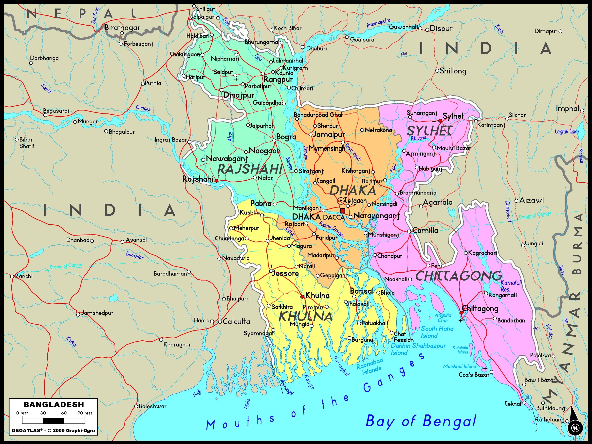

Life expentancy : 69 years (men), 70 years (women)
Currency : Taka
A breif History
Bangladesh (The country of the bengal) is a country in South Asia which shares its land borders with India and Myammar. The 8th most populous country largely consists of various ethnic and religous groups, the largest ethnic group being bengali and the largest religous group being muslim. However Bangladesh does consist of many hindu and tribal populations.
Bangladesh is covered by the Bengal delta, the largest delta on Earth, in fact Bangladesh has over 700 rivers and inland waterways, is covered with evergreen forest and jungles and also is home to the royal bengal tiger.
Bangladesh belonged to the British empire until the area joined pakistan after the partition movement. This is when Bangladesh was known as East Pakistan. However this was short lived as Bangladesh later became an independant nation after a 9 month war with Pakitan.
Modern day Bangladesh is now a developing nation and has the 4th largest metropolitian areas in the world and boasts becoming one of the largest textile exporters in the world.
CITY MAPPING
Feel free to click on the capital cities in Bangladesh to reveal an image

Search the population size of each division in Bangladesh, you'll be suprised to find how mmuch people live in such a small space!